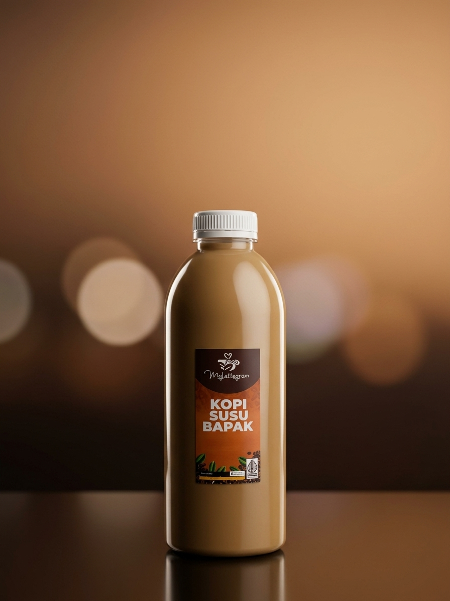

House Blend Nusantara
Memadukan biji kopi Arabika dan Robusta sangrai segar untuk karakter aroma cokelat-karamel yang hangat tanpa rasa pahit berlebih.
Signature House Blend 100% Halal Freshly Brewed Daily
Temukan kehangatan rumah di setiap tegukan Kopi Susu Bapak dari Mylattegram. Perpaduan espresso pilihan, susu segar yang creamy, dan pemanis alami — nikmat disajikan dingin maupun hangat.
Arabika & Robusta pilihan
Rasio susu segar seimbang
Tahan 5–7 hari di kulkas
Botol 250 ml & 1 Liter
Standar Racikan Mylattegram
Bukan sekadar kopi susu biasa — setiap botol Kopi Susu Bapak diracik dengan takaran presisi agar rasa konsisten dari tegukan pertama hingga terakhir.
Memadukan biji kopi Arabika dan Robusta sangrai segar untuk karakter aroma cokelat-karamel yang hangat tanpa rasa pahit berlebih.
Rasio susu segar dan krimer yang terukur membantu menetralkan keasaman kopi sehingga lembut di mulut dan nyaman di lambung.
Dirancang agar tetap nikmat saat dituang di atas es batu maupun dihangatkan sebentar ke dalam mug favorit Anda.
Diseduh segar sesuai pesanan (made to order) memakai bahan bersertifikasi Halal dalam botol food-grade tersegel higienis.
Galeri Produk & Pemesanan
Lihat detail kemasan botol, tentukan jumlah masing-masing ukuran, lalu kirim pesanan Anda langsung melalui WhatsApp.

Ready to Drink · Fresh Daily
Kemasan Botol Segel Higienis
Botol food-grade 1 Liter dengan label resmi Mylattegram, tutup segel rapat, dan sertifikasi bahan Halal.
Pas untuk stok lemari pendingin di rumah, rapat kantor, atau dinikmati bersama keluarga sepanjang minggu.
Ukuran ringkas yang praktis dibawa ke kantor, kampus, atau menemani perjalanan harian Anda.
Sesuaikan catatan opsional sebelum mengirim pesanan ke tim Mylattegram.
1 botol terpilih
Rp 78.000
Saran Penyajian Resmi
Diracik agar konsisten baik disajikan dingin bersama es batu maupun hangat di dalam mug.
Segar, creamy, dan tetap bold meski es mencair.
Kocok botol perlahan terlebih dahulu agar ekstrak espresso dan susu segar tercampur merata.
Siapkan gelas saji berisi es batu secukupnya (sekitar setengah hingga penuh gelas).
Tuangkan 200 ml Kopi Susu Bapak di atas es batu dan nikmati kesegaran seketika.
Aroma cokelat-karamel keluar lebih lembut untuk pagi atau malam yang tenang.
Kocok botol perlahan, lalu tuang 200 ml Kopi Susu Bapak ke dalam mug keramik tahan panas.
Hangatkan di microwave selama 45–60 detik, atau panaskan sebentar di panci kecil dengan api kecil tanpa sampai mendidih.
Aduk perlahan dan nikmati kehangatan kopi susu creamy di setiap tegukan.
Lembar Spesifikasi Produk
Data komposisi, penyimpanan, dan kehalalan resmi Mylattegram — Kopi Susu Bapak.
| Merek / Produsen | Mylattegram Indonesia |
|---|---|
| Nama Varian | Kopi Susu Bapak (Signature Blend) |
| Komposisi Utama | Espresso House Blend (Arabika & Robusta), Susu Segar, Krimer Nabati, Pemanis Alami |
| Pilihan Kemasan | Botol 250 ml (Personal) & Botol 1000 ml (1 Liter) |
| Daya Tahan Simpan | 5–7 hari di kulkas suhu 2–4°C (kondisi tersegel) |
| Konsumsi Setelah Buka | Maksimal 24 jam setelah segel dibuka |
| Status Kehalalan | 100% Bahan Halal & Tanpa Pengawet |
Ulasan Pelanggan Terverifikasi
“Kopi Susu Bapak ini jadi andalan stok kerja dari rumah. Kemasan 1 liter habis dalam 4 hari — manisnya pas, tidak bikin enek, dan karakter kopinya tetap terasa jelas.”
“Sesuai kalimatnya, benar-benar terasa seperti pelukan hangat di mug. Saya paling sering menghangatkannya sebentar sebelum mulai kerja pagi karena nyaman di lambung.”
“Ukuran 250 ml sangat praktis dibawa komuter ke kantor. Segel botolnya rapi, pengiriman cepat, dan tiba di rumah dalam kondisi masih dingin segar.”
Tanya Jawab Seputar Produk
Jawaban ringkas mengenai komposisi, daya tahan simpan, kehalalan, dan pengiriman Kopi Susu Bapak.